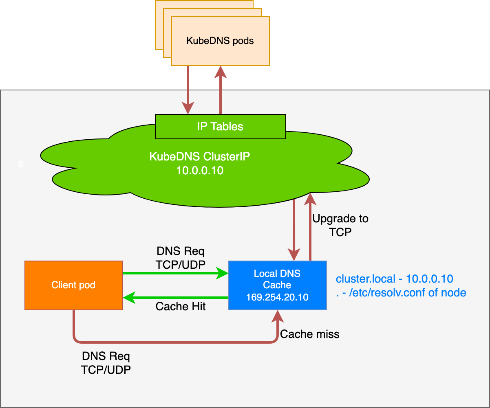

Feature state:
Stable since Kubernetes v1.18
This page provides an overview of NodeLocal DNSCache feature in Kubernetes.
Before you begin
You need to have a Kubernetes cluster, and the kubectl command-line tool must be configured to communicate with your cluster. It is recommended to run this tutorial on a cluster with at least two nodes that are not acting as control plane hosts. If you do not already have a cluster, you can create one by using minikube or you can use one of these Kubernetes playgrounds:
- iximiuz Labs
- Killercoda
- KodeKloud To
check the version, enter
kubectl version.
Introduction
NodeLocal DNSCache improves Cluster DNS performance by running a DNS
caching agent on cluster nodes as a DaemonSet. In today's architecture,
Pods in 'ClusterFirst' DNS mode normally reach out to a CoreDNS
clusterIP for DNS queries. This is translated to a CoreDNS
endpoint by kube-proxy. With this new architecture, Pods will reach out
to the DNS caching agent running on the same node, thereby avoiding DNAT
rules and connection tracking. The local caching agent will query the
CoreDNS service for cache misses of cluster hostnames
("cluster.local" suffix by default).
Motivation
With the current DNS architecture, it is possible that Pods with the highest DNS QPS have to reach out to a different node, if there is no local CoreDNS instance. Having a local cache will help improve the latency in such scenarios.
Skipping iptables DNAT and connection tracking will help reduce conntrack races and avoid UDP DNS entries filling up conntrack table.
Connections from the local caching agent to the CoreDNS service can be upgraded to TCP. TCP conntrack entries will be removed on connection close in contrast with UDP entries that have to timeout (default
nf_conntrack_udp_timeoutis 30 seconds)Upgrading DNS queries from UDP to TCP would reduce tail latency attributed to dropped UDP packets and DNS timeouts usually up to 30s (3 retries + 10s timeout). Since the nodelocal cache listens for UDP DNS queries, applications don't need to be changed.
Metrics & visibility into DNS requests at a node level.
Negative caching can be re-enabled, thereby reducing the number of queries for the CoreDNS service.
Architecture Diagram
This is the path followed by DNS Queries after NodeLocal DNSCache is enabled:

This image shows how NodeLocal DNSCache handles DNS queries.
Configuration
Note:
The local listen IP address for NodeLocal DNSCache can be any address that can be guaranteed to not collide with any existing IP in your cluster. It's recommended to use an address with a local scope, for example, from the 'link-local' range '169.254.0.0/16' for IPv4 or from the 'Unique Local Address' range in IPv6 'fd00::/8'.
This feature can be enabled using the following steps:
Prepare a manifest similar to the sample
nodelocaldns.yamland save it asnodelocaldns.yaml.If using IPv6, the CoreDNS configuration file needs to enclose all the IPv6 addresses into square brackets if used in 'IP:Port' format. If you are using the sample manifest from the previous point, this will require you to modify the configuration line L70 like this: "
health [__PILLAR__LOCAL__DNS__]:8080"Substitute the variables in the manifest with the right values:
# For historical reasons, the Service for CoreDNS is called "kube-dns" coredns=`kubectl get svc kube-dns -n kube-system -o jsonpath={.spec.clusterIP}` domain=<cluster-domain> localdns=<node-local-address><cluster-domain>is "cluster.local" by default.<node-local-address>is the local listen IP address chosen for NodeLocal DNSCache.If kube-proxy is running in IPTABLES mode:
sed -i "s/__PILLAR__LOCAL__DNS__/$localdns/g; s/__PILLAR__DNS__DOMAIN__/$domain/g; s/__PILLAR__DNS__SERVER__/$coredns/g" nodelocaldns.yaml__PILLAR__CLUSTER__DNS__and__PILLAR__UPSTREAM__SERVERS__will be populated by thenode-local-dnspods. In this mode, thenode-local-dnspods listen on both the CoreDNS service IP as well as<node-local-address>, so pods can look up DNS records using either IP address.If kube-proxy is running in IPVS mode:
sed -i "s/__PILLAR__LOCAL__DNS__/$localdns/g; s/__PILLAR__DNS__DOMAIN__/$domain/g; s/,__PILLAR__DNS__SERVER__//g; s/__PILLAR__CLUSTER__DNS__/$coredns/g" nodelocaldns.yamlIn this mode, the
node-local-dnspods listen only on<node-local-address>. Thenode-local-dnsinterface cannot bind the CoreDNS cluster IP since the interface used for IPVS loadbalancing already uses this address.__PILLAR__UPSTREAM__SERVERS__will be populated by the node-local-dns pods.
Run
kubectl create -f nodelocaldns.yamlIf using kube-proxy in IPVS mode,
--cluster-dnsflag to kubelet needs to be modified to use<node-local-address>that NodeLocal DNSCache is listening on. Otherwise, there is no need to modify the value of the--cluster-dnsflag, since NodeLocal DNSCache listens on both the CoreDNS service IP as well as<node-local-address>.
Once enabled, the node-local-dns Pods will run in the
kube-system namespace on each of the cluster nodes. This
Pod runs CoreDNS in
cache mode, so all CoreDNS metrics exposed by the different plugins will
be available on a per-node basis.
You can disable this feature by removing the DaemonSet, using
kubectl delete -f <manifest>. You should also
revert any changes you made to the kubelet configuration.
Stub domain configuration
The Corefile in the node-local-dns ConfigMap can be
modified with the stubDomain configuration. Some cloud providers might
not allow modifying the node-local-dns ConfigMap directly;
in that case, a kube-dns ConfigMap in the format
traditionally used by kube-dns can be used instead:
apiVersion: v1
kind: ConfigMap
metadata:
namespace: kube-system
name: kube-dns
data:
stubDomains: |
{"abc.com" : ["1.2.3.4"], "my.cluster.local" : ["2.3.4.5"]}Setting memory limits
The node-local-dns Pods use memory for storing cache
entries and processing queries. Since they do not watch Kubernetes
objects, the cluster size or the number of Services / EndpointSlices do
not directly affect memory usage. Memory usage is influenced by the DNS
query pattern. From CoreDNS
docs, > The default cache size is 10000 entries, which uses about
30 MB when completely filled.
This would be the memory usage for each server block (if the cache gets completely filled). Memory usage can be reduced by specifying smaller cache sizes.
The number of concurrent queries is linked to the memory demand,
because each extra goroutine used for handling a query requires an
amount of memory. You can set an upper limit using the
max_concurrent option in the forward plugin.
If a node-local-dns Pod attempts to use more memory than
is available (because of total system resources, or because of a
configured resource
limit), the operating system may shut down that pod's container. If
this happens, the container that is terminated (“OOMKilled”) does not
clean up the custom packet filtering rules that it previously added
during startup. The node-local-dns container should get
restarted (since managed as part of a DaemonSet), but this will lead to
a brief DNS downtime each time that the container fails: the packet
filtering rules direct DNS queries to a local Pod that is unhealthy.
You can determine a suitable memory limit by running node-local-dns pods without a limit and measuring the peak usage. You can also set up and use a VerticalPodAutoscaler in recommender mode, and then check its recommendations.